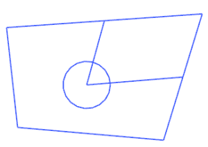
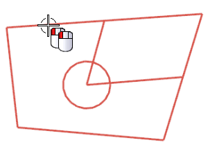
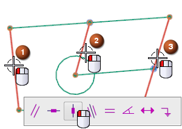
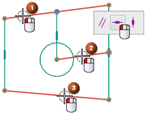
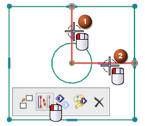
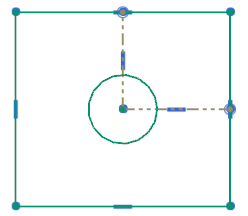

Create vertical constraints
-
Open skt09_85_constraints_toolbar.

-
Double-click the sketch as shown to open it for edit.

-
Select the three lines as shown, and on the shortcut toolbar, click Vertical
 .
.

To display the shortcut toolbar if you do not see it, right-click one of the selected objects.
-
Select the three lines as shown, and on the shortcut toolbar, click Horizontal .

-
Select the two lines as shown, and on the shortcut toolbar, click Convert to Reference
 .
.

The shortcut toolbar is a convenient way to manipulate objects in the graphics window.

-
Close the part now or close all parts when you exit the session.